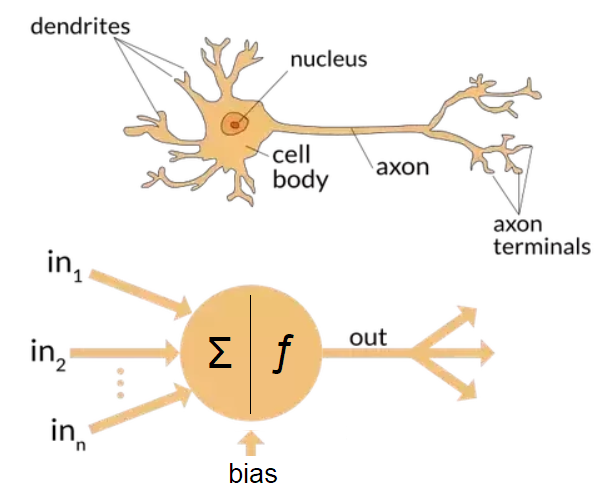
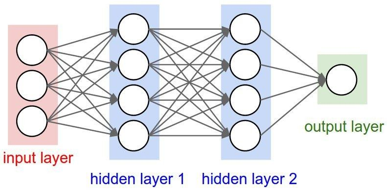
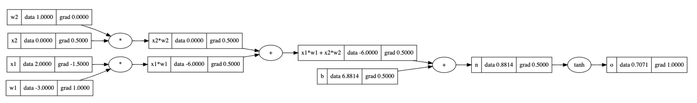
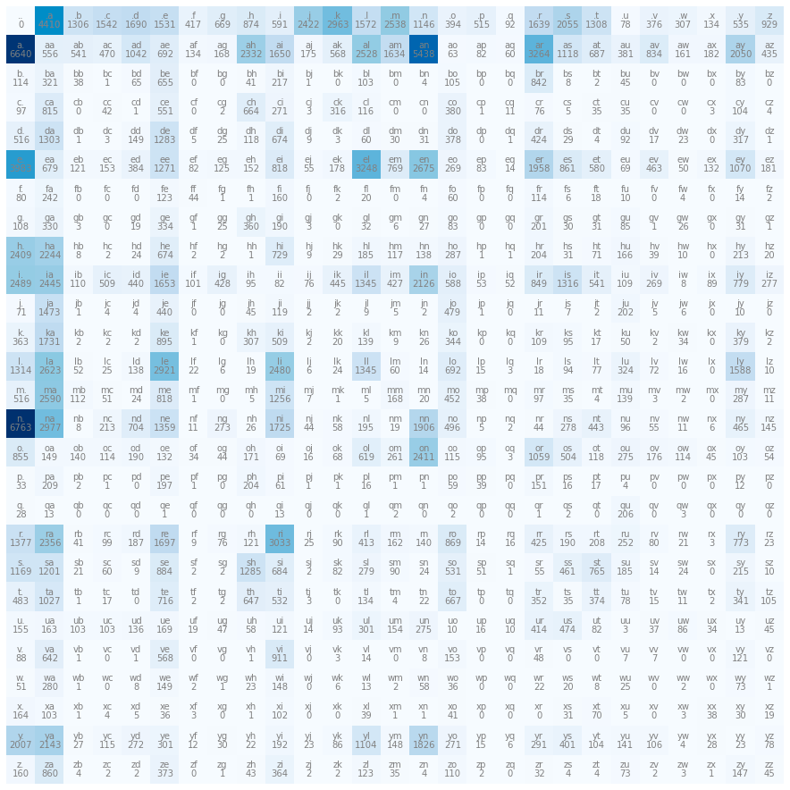
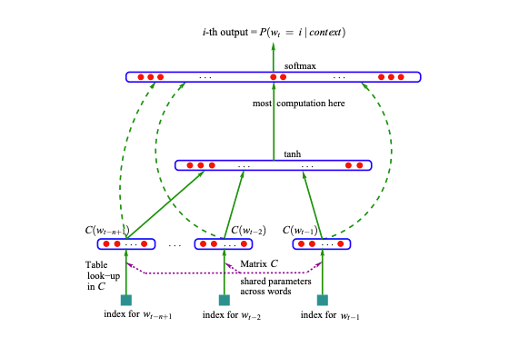
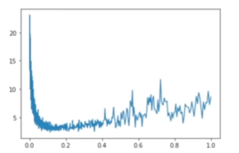
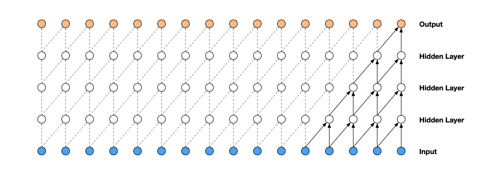
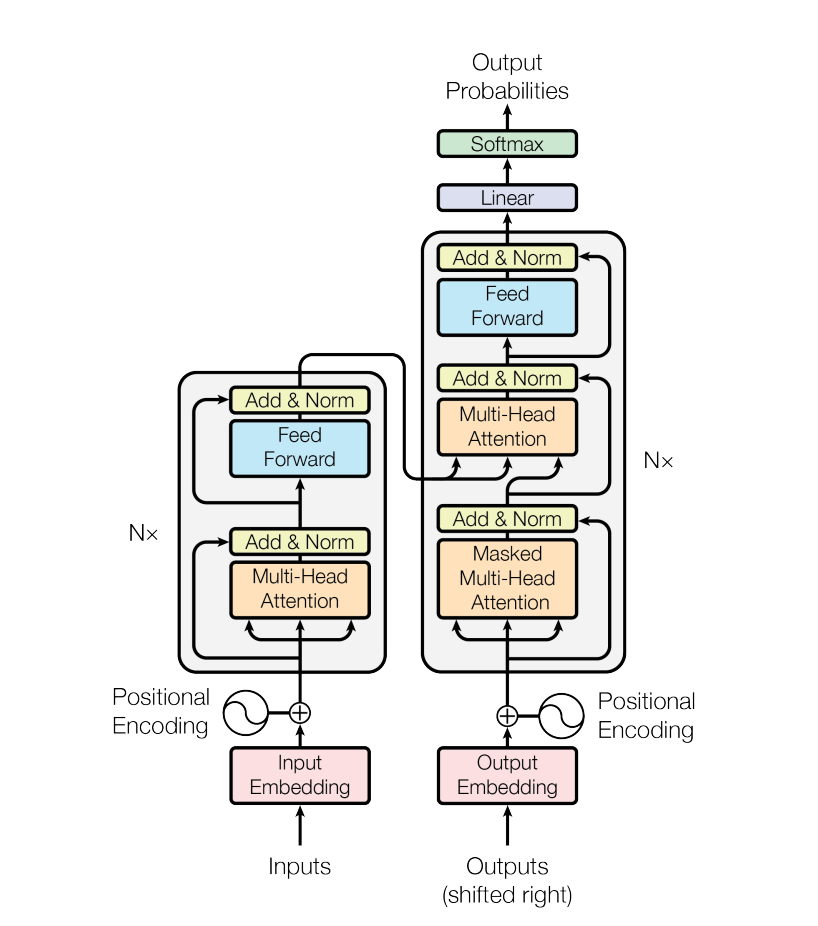
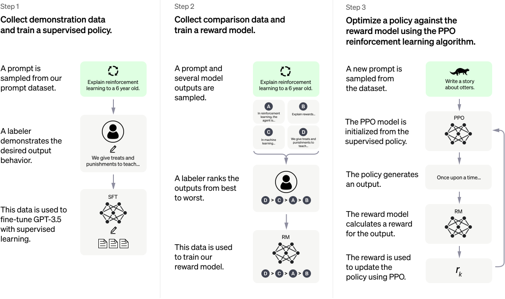

Introduction To Neural Networks
The Quest For Neural Networks Heroship
Becoming a neural networks “hero” is a lofty goal to achieve in 13 hours of lecture, but an enticing offer for someone looking to venture into the world of machine learning. After spending the last summer helping incorporate AI-powered tools into the workflow at the company I interned with, I was eager to learn more about the history of artificial intelligence and the implementation of neural networks. Andrej Karpathy, an influential AI researcher and one of the founding members of OpenAI, offers a free lecture series called Neural Networks: Zero to Hero, which I decided to study. While I’m certainly no hero yet, the course provided me with a strong foundational understanding of the core concepts that comprise neural networks, as well as meaningful practice implementing these in PyTorch. In this post, I intend to share my learning from the course, focusing on concepts and leaving out most of the math and code. The aim of this post is not to act as a substitute for Andrej’s incredibly detailed lectures, but to document the knowledge I’ve gained and serve as a primer for other beginners to the topic. If you have the time, I highly recommend working through the course (the total lecture time is about 13 hours, but it took me closer to 30 hours, accounting for time spent note-taking, coding and replaying difficult sections).
Defining Key Terms
Before starting the lecture, I primed myself with some introductory research. This paper was especially helpful in providing context. Below are some of the basics:
A neural network is any collection of neurons arranged in such a way that their interactions yields fruitful results. While neural networks aren’t specific to machine learning by definition (the human brain is the original neural network), the term is now most often associated with the artificial neural network. Artificial neural networks (ANN) were pioneered when Warren McCulloch and and Walter Pitts developed an algorithm to imitate human brain activity in the 1940s (more on the history of neural networks here).

Neurons in an ANN are, in essence, mathematical equations. They take a collection of inputs, perform some operation on these inputs, and produce a single output, which can then be transmitted to other neurons. Neurons in an ANN are similar to nerve cells in many ways:
both receive many input signals, assign weights to these, and process them
both transmit a single output to receivers when enough input is present
data processing occurs on a local level (within each neuron)
“memory” is distributed throughout the system (long-term memory is stored in synapse weights, short-term memory in impulses)
both networks' synapse connections are strengthened by experience
certain groups of neurons getting activated will cause other neurons to fire.
In an ANN, neurons are arranged into layers, where the collection of neurons receiving inputs are the input layer, the intermediary neurons that do most of the processing are the hidden layer, and the final layer producing a result is the output layer. Neural networks form conclusions and make decisions by assigning weights to each input, which determines how much impact each input has. Weights and biases are the parameters that, through trial and error, are adjusted during training until the network arrives at a correct model.

So, the defining characteristics of an ANN are its architecture (how neurons are arranged in layers and interconnected), the training algorithm (i.e. the technique for calculating and adjusting weights on connections), and its activation function (the function that determines whether a neuron should be activated or not based on the given inputs). The activation in the neurons of the output layer will determine the model’s “answer” to whatever question was posed. Activation functions often also normalize output to the proper desired range (i.e. 0 to 1).
Backpropagation as a Training Method
With some basic terms defined, we can now examine how these networks are trained at a baseline level. I mentioned that neurons are basically mathematical expressions. In fact, their most important characteristic in the context of training a network is that any operation that takes place in a neuron must be differentiable. This allows us to calculate gradients at each neuron with respect to the network’s loss function. The loss function measures the overall performance of a neural network by comparing target outcomes and actual outcomes, so the goal is always to minimize the loss function. Gradients represent the impact that each parameter has on the loss function, and are calculated using local derivatives at each neuron and the chain rule. The gradient provides information that allows the network to adjust these parameters to decrease the network’s loss. Simply put, we use derivatives to measure what impact each neuron has on the output. If the impact aligns with our target outcome, we increase that neuron’s impact, otherwise we reduce that neuron’s impact (using weights and biases). This is how the model learns.
To get a gradient at each neuron in the network, we need some way to calculate the derivative of each parameter with respect to its impact on the loss function. Using a process called backpropagation, this process is relatively simple.

Take this neuron from Andrej’s first lecture, which has two inputs (x1 and x2), two weights (w1 and w2), one bias b and the activation function tanh. The derivative of output o with respect to itself is 1. That's our base case. Now we can go back one step; do/dn is the derivative of tanh(n) at n = 0.8814, which is equal to 1-tanh(0.8814)^2 = 0.5. So we can fill in the gradients of o and n with 1 and 0.5, respectively (these are already filled in in the diagram above). The next four gradients are simple to calculate: since each of the four values are being added, the local derivative is 1 for each of them. We use the chain rule with the ongoing overall derivative, multiplying 0.5*1 in each case to get a gradient of 0.5. To get the leftmost gradients, we calculate local derivatives d(w2)/d(x2w2) = x2 = 0, d(x2)/d(x2w2) = w2 = 1, d(w1)/d(x1w1) = x1 = 2, and finally d(x1)/d(x1w1) = w1 = -3. Now we can get the gradient by multiplying the local derivative by the output’s gradient, so w2’s gradient is 0*0.5=0, x2’s is 1*0.5=0.5, w1’s gradient is 2*0.5=1 and x1’s is -3*0.5=-1.5.
There are many steps involved in calculating gradients and implementing backpropagation, but the arithmetic is simple. We begin with the rightmost local derivative, then we recursively iterate left, or backpropagate, multiplying each node’s local derivative by its output’s gradient. These gradients are the core element we need to train our neural network. This is an isolated example in one neuron, but we now know that if we need the final output o to increase, we can achieve this by making the weight w1 or the bias b more positive. These parameters can then be recursively adjusted until the output reaches the desired value. Backpropagation is the core mechanism that enables the training of neural networks. Using backpropagation, the parameters in a neural network can essentially be randomly initialized, and they will eventually converge to the correct values during model training.
A single-layer neural network
As mentioned above, a neural network can be as straightforward as a single layer of neurons that modify inputs by applying some weights and some mathematical expression. To understand how these are implemented, Andrej uses an example problem, where the goal is to generate more names or name-like strings using a model that is trained on a long list of existing names. This problem can be solved using a neural network, but a neural network isn’t the easiest solution. We can also use a probability distribution matrix and a character-level bigram language model, where we store pairs of subsequent characters and their corresponding frequencies, then use these to calculate the probability that one letter will follow another. With this probability distribution, we can make reasonably accurate guesses about which letter should follow the current letter; for example, the letter z is highly unlikely to follow the letter q, so the language model would almost never pick z next when the current letter is q. Conversely, the letter a is a common starting letter for names, so the model should assign a high probability that it follows the “start” character . (which is also the end character in this implementation and the graph below).
Below is a graph of these frequencies from a large dataset of words used in the exercises. Each cell denotes the frequency that the second character follows the first character in the dataset. If we divide each cell by the sum of its row (the total number of times the first character appeared in the dataset), we have a probability distribution showing how likely it is that each of the second characters were to follow the first character. Using this probability distribution is one way to generate words. For each character, starting at the first, we use the probability distribution to “pick” the next character, so characters that appeared next to each other in the dataset are likely to appear next to each other in the output.

This is relatively sound theoretically, but you can imagine that choosing a character only based on the previous output isn’t a very effective method. This is also not a neural network – since we aren’t training the model, we’re simply using existing probabilities to guess what a good output might be. Here are some sample “names” the model generated in the second lecture:
mor.
axx.
minaymoryles.
kondlaisah.
anchshizarie.
These names are indisputably not very name-like. However, in order to improve our output, we must be able to quantify its quality in some standard way. To do this, we’ll use the concept of likelihood; how likely an output is to be produced given a model’s probability distribution. So the likelihood of something like emma, which is in the dataset, should be reasonably high and something like xqxzi which certainly isn’t in the dataset, should be near-zero. The likelihood of the dataset is the product of all the individual probabilities that each element in the dataset could be generated. To make this more stable and easier to work with, instead of multiplying all of the probabilities, we sum the log of the individual probabilities, giving us the log likelihood. Since probabilities are between 0 and 1, making the logs of the probabilities negative, we negate their sum (the log likelihood) and use the negative log likelihood. To arrive at our final measure for output quality (the loss function), we divide the negative log likelihood by the number of values in the dataset and are left with an average negative log likelihood, which is a metric to describe how likely the model would be to reproduce the training set.
We can use this to create a neural network with the bigram language model. To train it, we follow a process similar to the one in the first example, iteratively backpropagating and modifying the weights in accordance with their gradients, thus minimizing the average negative log likelihood. To codify inputting a character into the model to calculate the next character, we use “one-hot” encodings of each character, where an integer is encoded as a matrix where each value is zeroed-out except the the value at the index corresponding to the integer’s value, which is 1. So the letter d which has index 3 would be represented as the matrix
[0, 0, 0, 1, 0, 0, 0, 0, 0, 0, 0, 0, 0, 0, 0, 0, 0, 0, 0, 0, 0, 0, 0, 0, 0, 0, 0]
Each element in this vector represents the position for one of the 27 characters of the alphabet, plus an extra for the start/stop character .. To create the foundation for training the model, we can create a randomly-initialized 27-by-27 matrix representing the weights: 27 neurons, each takes 27 inputs. So when we multiply the input matrix (1x27) by the weights matrix (27x27), we get a 1x27 output matrix. Each element in the output matrix represents the logit (log probability) for that character, and is typically “squished” using the softmax activation function, to represent a probability, in this case the probability of this character being chosen.
At the beginning, these outputted probabilities won’t be accurate or useful. However, all of the operations described above are differentiable, so we can follow a similar process as done in the first example to tune the weights. To train the network, we iteratively backpropagate and modify the weights in accordance with their gradients with respect to the loss function, thus minimizing the average negative log likelihood. Eventually, the weights matrix will converge to a more “correct” matrix that does a better job of assigning probabilities for the next character given an input matrix representing the current character.
Unfortunately, since the bigram model only takes into account the previous character, even a neural network trained on lots of data will output mediocre results (in fact, once it’s fully trained, it will be an equivalent model to the earlier, counting-based probability model using frequencies). To improve these results, we must increase the size of context we are considering, by adding more layers to our neural network. The important takeaway is that we are able to start off with a completely random collection of weights, assign these weights to modify input characters, and get probability estimates for the next character. Then, simply by calculating the derivatives of each parameter with respect to the output’s accuracy, we were able to iteratively improve the weights until we had a model that performed as well as it could given only a single character as context. This example also introduces one of the central challenges to implementing a neural network: how best to represent the input in a numerical format that can be fed into the network as input. In this example, a vector with a one-hot encoding worked well, but this encoding may vary greatly from network to network.
Building a Multi-Layer Perceptron
The next step in creating a more intelligent model is to give it more knowledge or context. To build a multi-layer perceptron, we will expand on the bigram model by adding two more layers and slightly altering our method for representing inputs.
To provide more context to the model, we now define a block size, or how many previous characters are given to determine the next character (in “real” large language models, the block size would determine how many words or chunks of words are used to predict the next). Our training set is now the set of all substrings (of block_size length) of names in the list of words, and the label for each substring is the character following it. For simplicity, let's assume block_size = 3.

Another feature introduced in this section is an embeddings layer, where we define an embeddings lookup table that stores an embedding for each character, thus converting each input (the 3-character string) to an n-dimensional embedding. This is done to normalize inputs and codify their values in a standard way. The embeddings are then adjusted as the network trains. Our new network’s architecture is as follows: the embeddings layer outputs embeddings that squash the inputs into a pre-defined space. Then, this embedding is the input to the hidden layer, the size of which we can choose. A design choice like the number of neurons in the hidden layer is called a hyperparameter, and is left to the developer to define and later optimize to improve the model’s performance. The hidden layer must have the same number of outputs as each neuron in the output layer takes as inputs. Finally, the output layer will have 27 neurons, one for each character. The hidden layer and the output layer each have a matrix of weights, which are used to process the inputs and are modified to train the model. The logits in the output layer are then exponentiated and normalized to sum to 1, so they can be used as probabilities.
This model is ready to train. However, we now have over 10,000 parameters and our dataset has more than 30,000 values. Calculating the output, backpropagating through each parameter, and adjusting the weights for each parameter is very computationally expensive, and while feasible for a network of this size, is not scalable. Instead, we choose minibatches, or smaller subsets of the dataset, to train the model. So for each pass, we choose a random, fixed-size subset of the data, and use the loss function with respect to that data to tune the weights. The size of the minibatch is another hyperparameter; the tradeoff for the developer is the compute time per pass vs. the noise introduced by using incomplete datasets to train the model.
We must also choose a reasonable learning rate, which is the multiplier used to multiply the gradient to adjust weights. With a very small learning rate, the model will learn at an unwieldy, slow rate. With a very high learning rate, the loss will be unstable, as the parameters are being over-adjusted each pass through the network. To find a good learning rate, we can plot the learning rate against the loss, and find a rate at which the loss is decreasing consistently without much noise. In the graph below, the learning rate at 0.1 seems to be a good choice. Learning rate decay is another common practice, where the learning rate is decreased at a later point in training when the loss is already small, and the initial learning rate has become too high.

Additional concepts that are key to be cognizant of when training a neural network are overfitting and underfitting. Overfitting occurs when the neural network is trained too much on a certain dataset, and starts to essentially memorize that data. Then, when sampling from this neural network, it will too closely reproduce the data that it was fed instead of producing useful “new” data. Underfitting is the opposite, and takes place when the neural network hasn’t learned enough from the data. To mitigate and measure these phenomenons, we split our dataset into a training set (about 80% of the data), a development set (about 10% of the data), and a test set (the last 10% of the data). The training data is the only set that should be used to train the model. The development set should then be used to evaluate the network’s loss, since this data hasn’t been seen yet by the network. If the loss on the training data is much lower than the loss on the development data, the network is likely overfitted; it is performing much better on data it is familiar with. If the losses are approximately the same, the model is likely underfitted; it hasn’t learned enough, and the developer should likely tweak the hyperparameters (train longer, increase the size of the network, tweak the learning rate, etc.).
Improving and Stabilizing the Multilayer Perceptron
The model described above is functional and leaves us with relatively low loss, but there is some wasted effort inherent to its architecture, and other potential weaknesses which should be addressed. Since all of our weights are randomly initialized, the output probabilities will initially predict highly incorrect outcomes. The loss calculated on these initial values will be very high, much higher than the loss would be with evenly distributed probabilities (i.e. where each next character is equally likely to be predicted). This occurs when the weights are initialized with large random numbers, outputting very confident predictions, despite not having been trained to output confidently correct predictions. This can be mitigated by initializing the weights matrix for the output layer with values very close to 0, so that each logit in the output is near-zero, producing output probabilities that are near-equal. This simple step leaves us with a significantly lower initial loss, which then reduces total computation. Instead of wasting computation correcting the initial predictions, the model will approach accurate weights much faster. As the model learns, these near-zero weights will be adjusted to approximate their correct values.
Another improvement to the model is facilitated by batch normalization. This is another layer that is placed between hidden layers to scale inputs between layers, so that anomalies don’t take place. We’ve already discussed an embeddings layer which normalizes the inputs, but activations sent as inputs from one layer to the next are left raw. In batch normalization, these intermediate values are scaled and shifted using their standard deviation and mean. This addresses the issue of saturated neurons, where an activation function for a layer fails to output values evenly distributed along its range (i.e. evenly distributed between 0 and 1), but instead tends toward the extremes, creating hyperactive neurons and dead neurons that have no learning power at all (lots of 0s and lots of 1s). To normalize a batch, we center the pre-activation values, or the values that feed into the activation function, using the mean and the standard deviation of each batch to scale and shift the activations from the previous layer. The goal is to create a roughly Gaussian shape for the distribution of data inputted to the next layer.
Even with these stabilizing measures, the multi-layer perceptron described is not very deep, and thus has limited learning capabilities. One factor in the current implementation that makes it difficult to create deeper networks is our method for processing inputs; currently, we are squashing all of our input into the neural network at the input layer simultaneously. This mutes the data and doesn’t allow for each piece of input to influence the outcome as much as it can. Another improvement to the model is the concept of the WaveNet, where smaller chunks of input data are concatenated, and these chunks are combined piece-by-piece.

Such a model enables an even deeper neural network, where each input element can have a greater impact. These improvements represent only a subset of optimizations to neural networks; this is its own field of research and requires many more dedicated posts to fully discuss. I will focus the rest of this post on lecture 7 (the most viewed lecture in the series) and the transformer architecture introduced there, which has revolutionized neural network implementation.
The Transformer
The transformer architecture was first introduced in the 2017 paper Attention Is All You Need, and forms the foundation for famous natural language models like ChatGPT (GPT = generative pre-trained transformer), as well as a long list of models beyond natural language processing. The basic idea is that training data should be able to communicate with other training data and decide which data to value more. “Attention” is the idea that the tokens are aware of each other’s existence and can focus on the more important ones. In this way, information can be gathered in a data-dependent way, where some pieces of training data are more valuable than others.
With the transformer architecture, small chunks, or batches, of the dataset are separated and used for training piece-by-piece, with a fixed batch size. The training data in language models is commonly referred to as a token, which is typically a chunk of characters smaller than an average word (a token in the name-prediction example would be a single character). Previously, all of our context information would inform the following prediction with equal weight or value: any character in the series of three characters in our context blocks was equally important. Now, with attention, a token can express affinities for other tokens, where a certain past token might factor in more heavily than others when calculating a prediction. This replicates real-world sentence formulation more accurately. For example, when choosing the correct verb in a sentence, the subject of the sentence should be a more important factor than the article the sentence started with. An attention head is where the the weighted sums representing relationships between tokens are calculated. Usually, multiple attention heads are computed in parallel, allowing the model to encode different types of relationships between tokens. It is important to note, however, that tokens within a batch can only communicate with themselves; there is no communication between batches of data.

The transformer paper suggests an architecture that stacks “attention layers” with multilayer perceptrons. In each attention layer, attention vectors are used to represent contextual relationships between tokens in a batch. Multiple attention vectors are used in multi-head attention layers, which are then combined using a weighted average. This setup creates a deeper neural network, which is capable of fitting our data much more closely, effectively learning more and incorporating context in a more powerful way.
Training Neural Networks
By the end of lecture 7, the viewer has coded alongside Andrej to build a simplified model of a GPT which is capable of generating a specified number of tokens in a manner similar to the data it was trained on (i.e. generating Shakespeare-like content given Shakespeare’s work to train on). The hyperparameters are entirely configurable, so the developer is able to choose the learning rate, training iterations, number of embeddings, number of layers, the number of heads, head size, the batch size, the block size, and the dropout rate. When choosing these hyperparameters, I was tempted to push the size of the network ever higher – the bigger the better, right? Near the end of the video, Andrej mentions that the example network he trained took fifteen minutes to train on his high-powered GPU, and warns that anyone unequipped with a dedicated GPU shouldn’t attempt to train that network. I tried it anyway, but gave up when my MacBook grew alarmingly warm after six hours of CPU time and the training was still only halfway done.
This was quite interesting to me, as I had heard of a GPU before, but never thought to look into their use or the difference between a GPU and a CPU. Graphics processing units were originally developed to assist in rendering image or video, or performing other operations which require highly parallel mathematical/graph operations. GPUs have thousand of cores, which make them especially adept at performing lots of small operations in parallel, which is exactly what training a neural network requires. CPUs (core processing units) have between two and sixty-four cores, and are far more generalist than GPUs, primarily performing operations serially. For this reason, training a neural network using a CPU is exceptionally slow and prohibitively expensive depending on the size of the network. Considering the massive datasets and network sizes used to train production-ready neural networks such as ChatGPT, it’s easy to imagine how massive computation costs are for participating companies, and how much attention is given to training techniques and choosing well-suited hardware.
Pre-training vs. Fine-tuning
Lastly, an important note: training a very deep neural network with lots of language data will not produce a highly-capable AI assistant like ChatGPT without more work. The process described above and discussed throughout the lecture series is known as “pre-training”, where a model is fed massive amounts of language data and trained to generate more, similar data. However, a model that spits out random generated data that approximates its training data isn’t very useful. The model must be “fine-tuned” to match its intended purpose. A chat-model must be able to answer questions and converse, a code generator must be able to generate code based on a prompt, and so on. OpenAI released the diagram below explaining their fine-tuning process in this blog post introducing ChatGPT. The fine-tuning process requires far more human intervention, including ranking outputs, creating a reward model which rewards high-quality responses, and the utilization of reinforcement learning. This process is nuanced, and is not nearly as open-source as the pre-training stage is. This is where the neural network is converted from a raw neural network to a highly commercial product that can be sold and monetized, so logically these techniques are kept secret.

Wrapping Up
We’ve come a long way from backpropagation to a full-fledged natural language model with configurable hyperparameters, layer normalization, skip connections, self-attention, and multi-layer perceptrons. If this introduction piqued your interest, following the lecture series is the best way to expand on more difficult concepts and create your own implementation of a neural network. I will likely continue to write about neural networks, and am taking a class on the topic this coming semester, so stay tuned for more posts on the topic! Thanks for taking the time to read.